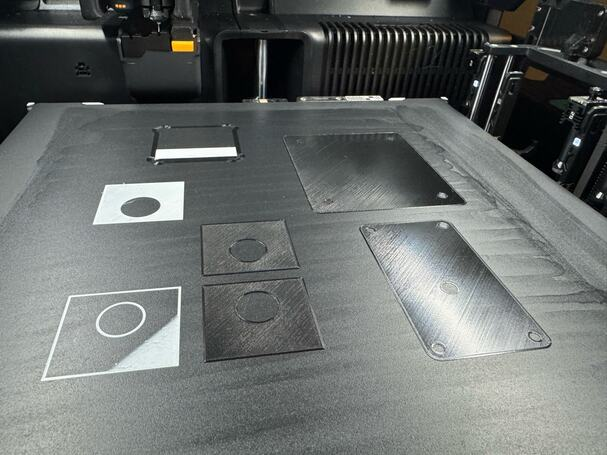

The machines
Each plastic has its side, plate and feed.
Both printers are Bambu Lab H2Cs, with two hotends each. A print settled which side, plate and feed every plastic gets.
Seen in Mark 1 and Mark2 · every plastic the machine is made of · each row of the table is one dated print

123The left hotend is fixed. It is the hotend of Bambu’s H2D, so nozzles sold for that printer fit it: hardened steel, tungsten carbide, diamond.
The right hotend swaps. It is heated by induction and gripped by pincers, and the printer trades it for another from a rack during a print. Only hotends made for the H2C fit. Here spares marked 0.2 wait in the rack.
The plate is changed for the plastic. This one is the smooth Engineering Plate, spread with glue. The other kind is textured PEI.
Mark 1 was ordered on 22 March 2026. It was called H2C until 6 October and still answers to that name on the network. Mark2 was ordered on 4 May. Neither stays loaded one way: plates, nozzles and spools are changed for the job, so every job’s record names its own.
Which plastic goes where
| Plastic · its print | Side and nozzle | Plate | Fed from | Dried in |
|---|---|---|---|---|
| PET-GFFront-bottom · Mark2 · 11 November 2026 | Left, {{h2c-pieces:/pieces/front-bottom/nozzle/diameter_mm}} mm, hardened. A second colour: right {{h2c-pieces:/pieces/tube-collars/nozzle/diameter_mm}} mm. | {{h2c-petgf:/curr_bed_type}} | The left outside spool: 1 kg straight out of the dryer, 3 kg out of a sealed box with an axle. | SUNLU E2, only if the spool has taken up moisture. |
| PETG clearReservoirs · Mark 1 · 26 October 2026 | Left, {{h2c-reservoir:/nozzle_diameter/0}} mm. | {{h2c-reservoir:/curr_bed_type}}, glued | An AMS 2 Pro, which carries on to its next spool when one runs out. | The same AMS 2 Pro, spool in place. |
| PETG coloursLabels · Mark 1 · 8 November 2026 | {{h2c-pieces:/pieces/labels/nozzle/diameter_mm}} mm, both sides. Black left; four colours on four right hotends. | {{h2c-idset:/curr_bed_type}}, glued | Black from the AMS HT, the other four from an AMS 2 Pro. | Those two units. |
| TPUPump elbows · Mark2 · 22 October 2026 | Right, {{h2c-pieces:/pieces/pump-elbows/nozzle/diameter_mm}} mm. | {{h2c-elbow:/curr_bed_type}}, glued | The right outside spool, in a sealed box it turns freely in. No AMS feeds TPU. | AMS HT. |
| ASA AeroLevel float · Mark2 · 3 October 2026 | Right, {{h2c-float:/nozzle_diameter/1}} mm, hardened. | {{h2c-float:/curr_bed_type}}, glued | The right outside spool, from a sealed drybox. | SUNLU E2. |
| PET-CFFaucet, since retired · May and June 2026 | Left, 0.6 mm tungsten carbide, later diamond. | Textured plate | The SUNLU E2. | SUNLU E2. |
Fibre goes left, mostly. Glass and carbon fibre wear a nozzle away. Tungsten carbide and diamond nozzles stand up to them and are made only for the left side, so the ledger’s rule is that abrasive plastic runs there. The record also holds PET-GF through the right side’s hardened steel: a whole white faucet on Mark2 on 15 October 2026, and the second colour of every label.
Still openNothing in the record measures the wear on a right-side nozzle after PET-GF.
“So far, the diamond PCD has been the toughest and most reliable, in other sizes.”